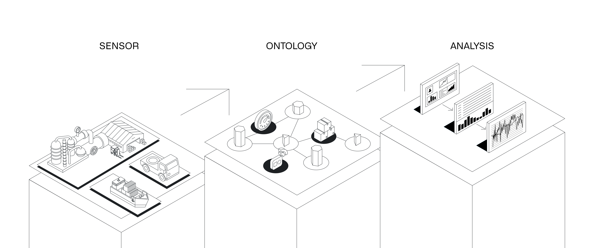
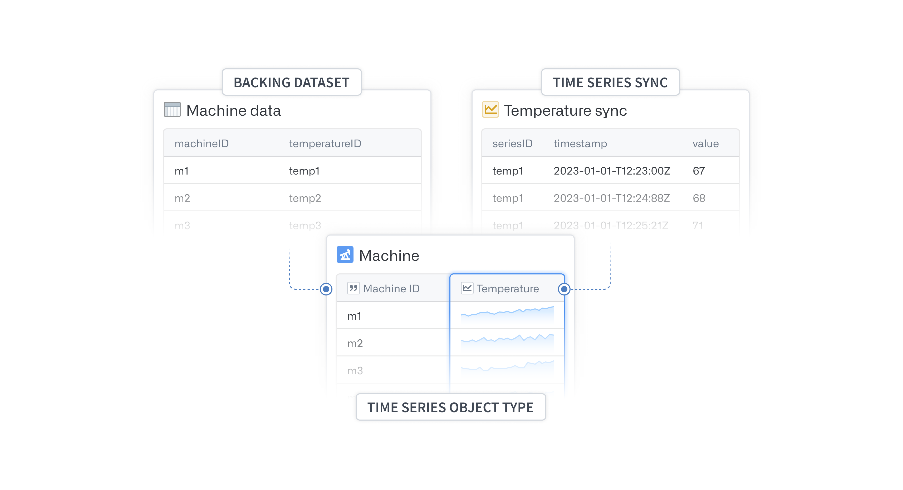
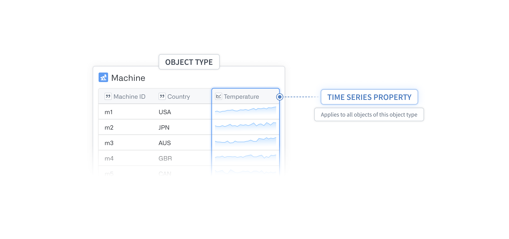
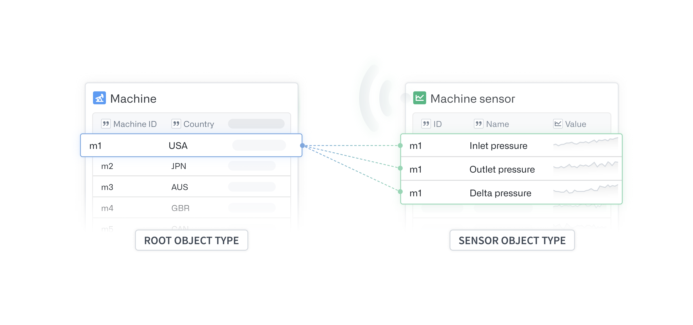
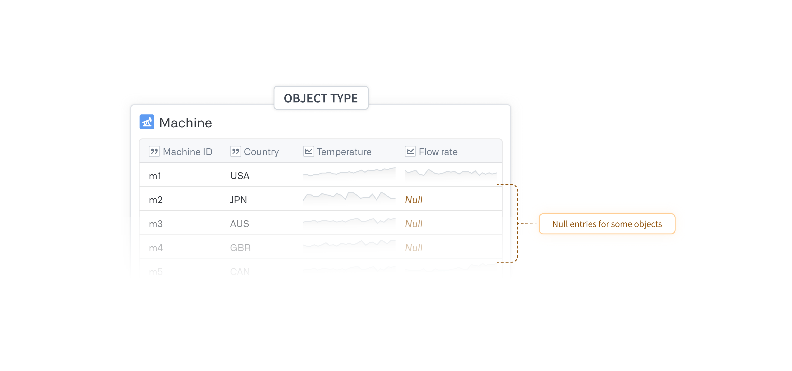
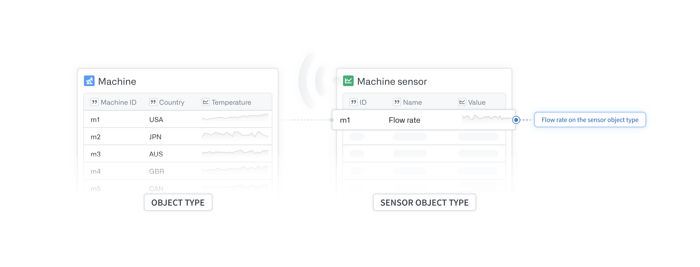

Time series data are a series of measurements taken over time, usually at a regular interval.
Some examples of time series data include:
You can visualize and analyze changes that occur over time using Foundry applications like Quiver, Vertex, and Workshop. Learn more about using time series in Foundry.
To use your data for time series analysis, you must set up two major components: a time series object type and a time series sync.
The time series object type defines the metadata of your time series dataset and allows Foundry applications to access the underlying time series data. The time series sync is a resource backed by a dataset or a stream that indexes time series data and provides values for time series properties.

There are two ways to set up time series object types in the Ontology. The most common method is to add a time series property (TSP) directly to the object type. This option should be used whenever all objects of that object type have time series data for that TSP. These object types should form the basis of your analyses or operations.
Learn more about creating a time series object type and configuring TSPs.

The second, more advanced configuration option is to set up a sensor object type that is linked to the root object type for which it records data. The root object type can also have other TSPs set up directly on itself, as discussed in the first option. This setup is useful when your organization has equipment with a high number of configuration options.
End-user applications throughout Foundry can fetch and display TSPs that live on an object type or on a linked sensor object in a unified view. If you run a search-around on an object for its linked sensor objects, you should return a set of sensors with unique sensor names. Since each sensor object is uniquely named, you can generally have a single sensor object type.
Read more about setting up sensor object types.

:::callout{theme="neutral"} In the first configuration option, you can add time series properties by adding additional columns to the time series object type backing dataset. In the second option, you can add more time series properties that are effectively linked to the root object type by adding additional rows to the time series object type backing dataset for the sensor object type. :::
In the example below, because there are values for Temperature for all the machines, we should set Temperature as a TSP on the Machine object type.

Since Flow rate is only relevant for certain machines, we recommend placing the TSP on a sensor object type. This will help prevent numerous null entries in the time series object type backing dataset.

Sensor object types provide flexibility to your Ontology by allowing each object of an object type to have its own set of time series data, that is, one time series per linked sensor. Some other advantages to using sensor object types include the following:
For example, consider an Equipment object type, where each piece of Equipment may be either a Pump or a Reactor. The former has a Pressure reading, and the latter has a Temperature reading. You could create separate Pump and Reactor object types, but the more generic Equipment object type may be a better choice. In this case, without sensor objects, Equipment objects would need to have two TSPs; however, only one of these would actually have time series data for a given piece of Equipment. As the specialization of the Equipment grows, you will need to manage the sensors with sensor object types to maintain legibility, that is, to not show mostly empty TSPs for each object.
When you configure a sensor object type, special metadata is applied to parts of your Ontology to indicate that this object type is a sensor and is recording data for the specified root object type. At a higher-level, frontend applications that want to load all relevant time series data for an object set perform the following actions:
Learn more about accessing sensor object types in Quiver or using them to create derived series.